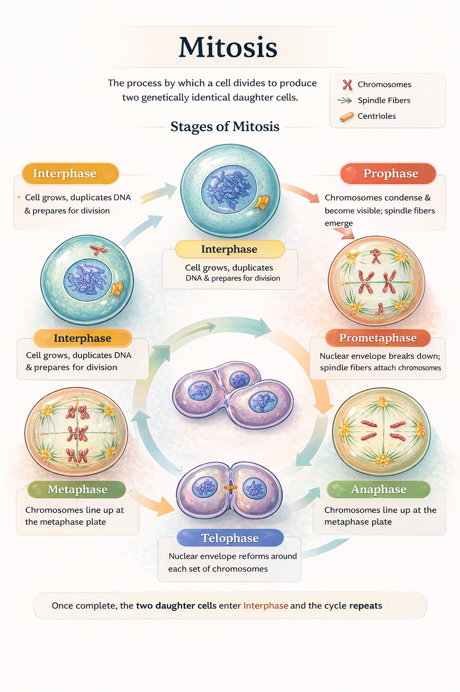

The cell cycle is the orderly sequence of events from one cell division to the next. It consists of two major phases: interphase (when the cell grows and copies its DNA) and the mitotic (M) phase (when the cell divides).
Some cells exit the cell cycle and enter a resting state called G0. These cells are metabolically active but are not preparing to divide. Highly differentiated cells like neurons and mature muscle cells typically remain in G0 permanently. Other cells, like liver cells, can re-enter the cell cycle from G0 if stimulated (for example, after liver injury).
Different cell types divide at vastly different rates, reflecting their degree of differentiation. Epithelial cells lining the gut divide 1–2 times daily to replace cells lost to abrasion. Hepatocytes (liver cells) are largely quiescent (in G0) but divide approximately once per year under normal conditions, though they can re-enter the cell cycle rapidly after liver injury. Neurons and mature cardiac myocytes are terminally differentiated and essentially never divide, which is why damage to brain and heart tissue is often permanent.
Mitosis is the division of the nucleus, producing two genetically identical daughter nuclei. It is followed by cytokinesis (division of the cytoplasm).

The cell cycle is tightly regulated by a system of checkpoints that ensure each phase is completed correctly before the next begins. The key molecular players are:
Major checkpoints:
Proto-oncogenes are normal genes that promote cell growth and division. When they are mutated (by point mutation, amplification, or chromosomal translocation), they can become oncogenes that drive excessive cell proliferation. Think of them as a stuck accelerator pedal.
Tumor suppressor genes normally put the brakes on cell division or promote apoptosis (programmed cell death). When both copies of a tumor suppressor are inactivated (Knudson's two-hit hypothesis), the cell loses a critical growth restraint. p53 is the most commonly mutated tumor suppressor in human cancers; it normally halts the cell cycle when DNA damage is detected and can trigger apoptosis if the damage is irreparable. Rb (retinoblastoma protein) blocks entry into S phase until the cell receives appropriate growth signals.
Cancer typically develops through a multi-step process: multiple mutations accumulate over time in both oncogenes and tumor suppressor genes. Carcinogens (chemicals, radiation, certain viruses) increase the rate of mutations. Cancer cells characteristically show uncontrolled growth, evasion of apoptosis, ability to invade tissues (metastasis), ability to stimulate blood vessel growth (angiogenesis), and genomic instability.
Cells communicate through three main signaling modes based on distance. In paracrine signaling, a cell secretes local regulators that affect nearby target cells (e.g., growth factors during wound healing). In synaptic signaling, a neuron releases neurotransmitters across a synapse to a specific target cell (fast, precise). In endocrine signaling, hormones are secreted into the bloodstream and travel to distant target cells throughout the body (slower, systemic). The type of signaling determines both the speed and specificity of the cellular response.
Cells communicate through signal transduction pathways. A signaling molecule (ligand) binds to a receptor on the cell surface, activating a cascade of intracellular events that ultimately alter gene expression or cellular behavior. This typically involves: (1) reception (ligand binds receptor), (2) transduction (relay molecules pass the signal via phosphorylation cascades or second messengers like cAMP), and (3) response (activation of transcription factors, changes in enzyme activity, etc.).
Receptor tyrosine kinases (RTKs) are a major class of cell-surface receptors for growth factors. In the inactive state, RTKs exist as monomers. When a ligand (such as a growth factor) binds, two receptor molecules dimerize. This brings their intracellular kinase domains close together, enabling cross-phosphorylation of tyrosine residues on each other's cytoplasmic tails. The phosphorylated tyrosines then serve as docking sites for intracellular relay proteins, initiating signaling cascades that regulate cell growth, differentiation, and survival.
A key feature of signal transduction is amplification: each step in the cascade activates many more molecules than the step before. In the classic example of epinephrine-stimulated glycogen breakdown, a single epinephrine molecule binding one receptor ultimately triggers the release of approximately 108 glucose molecules. This enormous amplification occurs because each activated enzyme in the cascade catalyzes many reactions before being deactivated, with the signal growing exponentially at each level of the cascade.
Not all signaling molecules bind cell-surface receptors. Steroid hormones (like estrogen, testosterone, cortisol) and thyroid hormones are lipid-soluble and can pass directly through the plasma membrane. Inside the cell, they bind intracellular receptors (often in the cytoplasm or nucleus) that function as ligand-activated transcription factors. The hormone-receptor complex undergoes a conformational change, binds specific DNA response elements, and directly activates or represses transcription of target genes. This mechanism produces slower but longer-lasting effects compared to surface receptor signaling.
Epigenetic regulation controls gene expression without changing the DNA sequence. Two key mechanisms work together: DNA methylation (adding methyl groups to cytosine bases, particularly at CpG dinucleotides in promoter regions) silences genes, while histone acetylation (adding acetyl groups to lysine residues on histone tails) activates genes. Acetylation neutralizes the positive charge of histones, weakening their grip on negatively charged DNA and opening chromatin for transcription. Conversely, promoter methylation recruits a complex containing histone deacetylases, which remove acetyl groups and cause chromatin to condense into a transcriptionally silent state.
Genomic imprinting is an epigenetic phenomenon in which certain genes are expressed only from the allele inherited from one specific parent — the other allele is silenced by DNA methylation and chromatin modification established in the parental germline. Approximately 120 human genes are confirmed to be imprinted. In early embryogenesis, paternally expressed imprinted genes tend to promote placental growth and nutrient acquisition, while maternally expressed genes tend to limit fetal growth and promote embryo development. Disruptions in imprinting can cause disorders such as Prader-Willi syndrome and Angelman syndrome.
MicroRNAs (miRNAs) are short non-coding RNA molecules (approximately 22 nucleotides) that regulate gene expression post-transcriptionally. After being processed from longer precursors, miRNAs associate with the RNA-induced silencing complex (RISC) and guide it to complementary sequences in target mRNAs. Depending on the degree of complementarity, the target mRNA is either degraded or its translation is blocked. A single miRNA can regulate hundreds of different mRNA targets, making miRNAs powerful regulators of development, differentiation, and disease.
The ubiquitin-proteasome pathway is the cell's primary mechanism for targeted protein degradation. Proteins destined for destruction are tagged with multiple copies of the small protein ubiquitin by a cascade of enzymes (E1, E2, E3 ligases). The polyubiquitin tag is recognized by the proteasome, a large barrel-shaped complex that unfolds the tagged protein and proteolytically cleaves it into small peptides. The ubiquitin molecules are recycled. This system controls the levels of cyclins, transcription factors, and damaged proteins, and its dysregulation is implicated in cancer and neurodegenerative diseases.
| Feature | Apoptosis | Necrosis |
|---|---|---|
| Type | Programmed (controlled) | Accidental (uncontrolled) |
| Trigger | Internal signals, developmental cues, DNA damage | Injury, toxins, infection, lack of blood supply |
| Cell membrane | Remains intact initially; cell shrinks | Ruptures; cell swells and bursts |
| Inflammation | No (clean; debris is phagocytosed) | Yes (spills contents, triggers immune response) |
| Energy requirement | Requires ATP | Passive process |
Aging is associated with accumulation of DNA damage, telomere shortening (telomeres are protective caps at chromosome ends that shorten with each division; when they become too short, the cell enters senescence or apoptosis), oxidative stress, and declining capacity for tissue repair.
Normal human somatic cells can divide a limited number of times before entering permanent growth arrest (senescence). This replicative limit, approximately 50 divisions for human fibroblasts, is called the Hayflick limit (after Leonard Hayflick, who described it in 1961). The primary molecular clock driving this limit is telomere shortening: with each division, telomeres become shorter until they reach a critical length that triggers cell cycle arrest via the p53 pathway. Cancer cells bypass the Hayflick limit, typically by reactivating telomerase.
Apoptosis proceeds through two converging pathways, both mediated by caspases (cysteine proteases that cleave after aspartate residues). The extrinsic pathway is triggered by external death signals: a killer T cell's Fas ligand binds the Fas receptor on the target cell, recruiting adaptor proteins that activate initiator caspase-8, which then activates executioner caspases that dismantle the cell. The intrinsic pathway responds to internal stress: damaged mitochondria release cytochrome c into the cytoplasm, which binds Apaf-1 to form the apoptosome, activating caspase-9 and then executioner caspases. Both pathways converge on the same final destruction machinery.
Cell proliferation and death are controlled by an interconnected network of signaling pathways. The Ras/MAPK pathway transmits growth factor signals to the nucleus, activating transcription factors like Myc that drive cell cycle entry. The Rb/E2F pathway acts as a gatekeeper: Rb protein binds and inhibits E2F transcription factors; growth signals cause cyclin D-CDK4/6 to phosphorylate Rb, releasing E2F to activate genes needed for S phase. The p53 pathway senses DNA damage and can halt the cell cycle (via p21, a CDK inhibitor) or trigger apoptosis (via Bax, which promotes mitochondrial cytochrome c release). The PI3K/Akt survival pathway inhibits apoptosis, while the Wnt/beta-catenin pathway promotes proliferation. Mutations in any of these components can contribute to cancer.
Please Pass Me Another Taco → Prophase, Prometaphase, Metaphase, Anaphase, Telophase